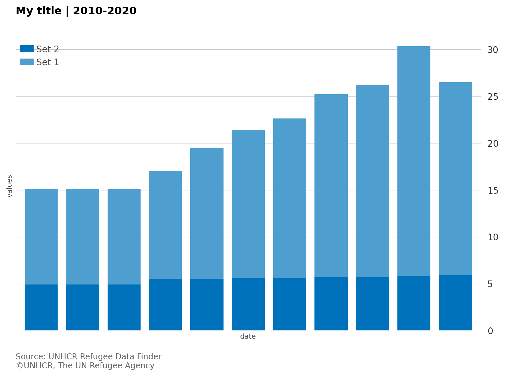
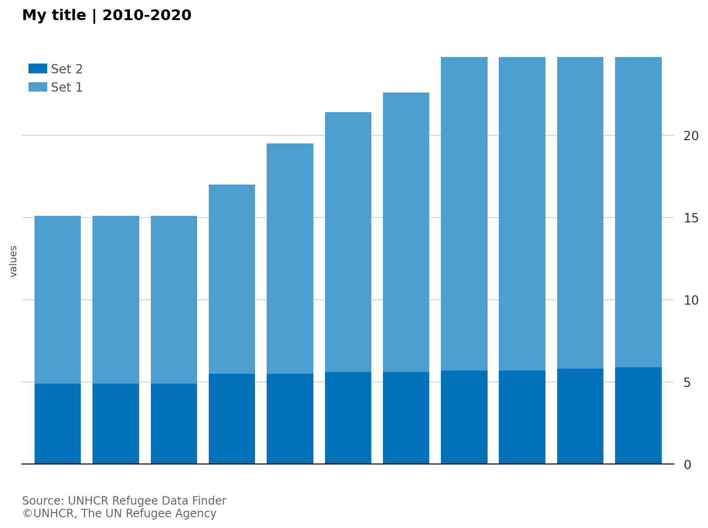
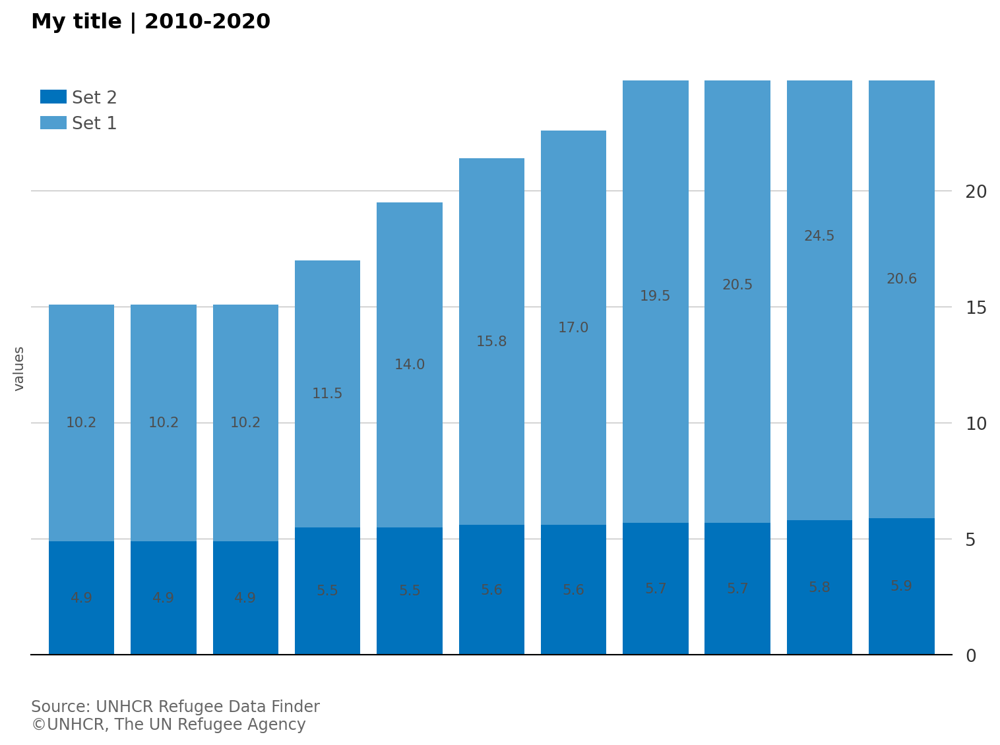
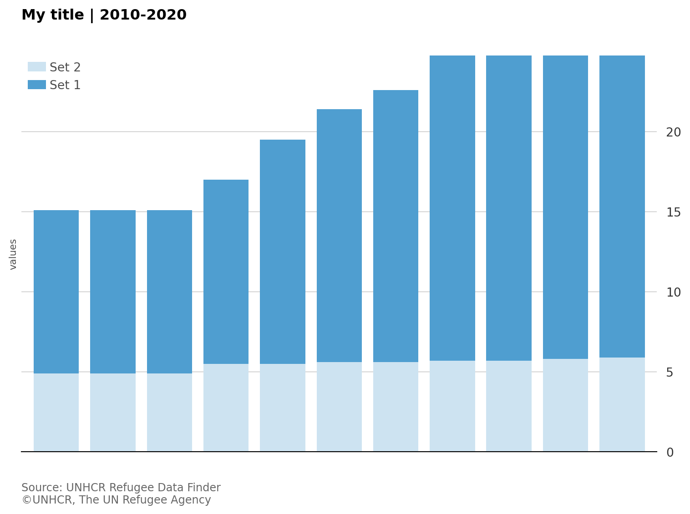
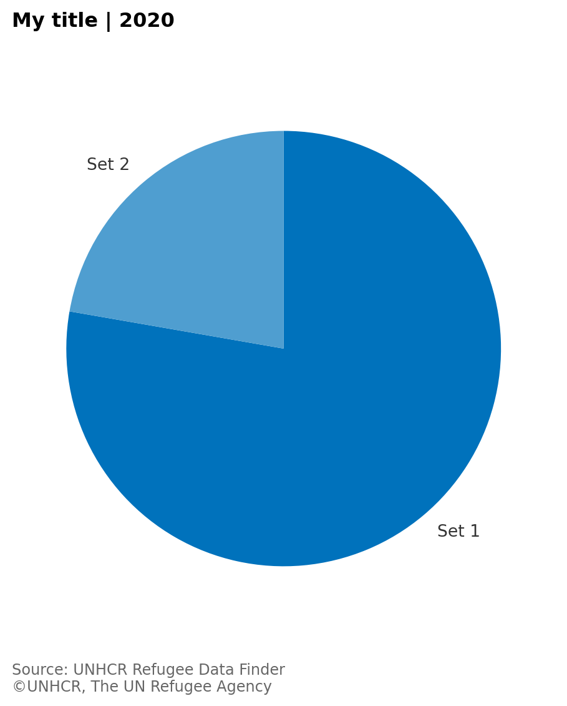
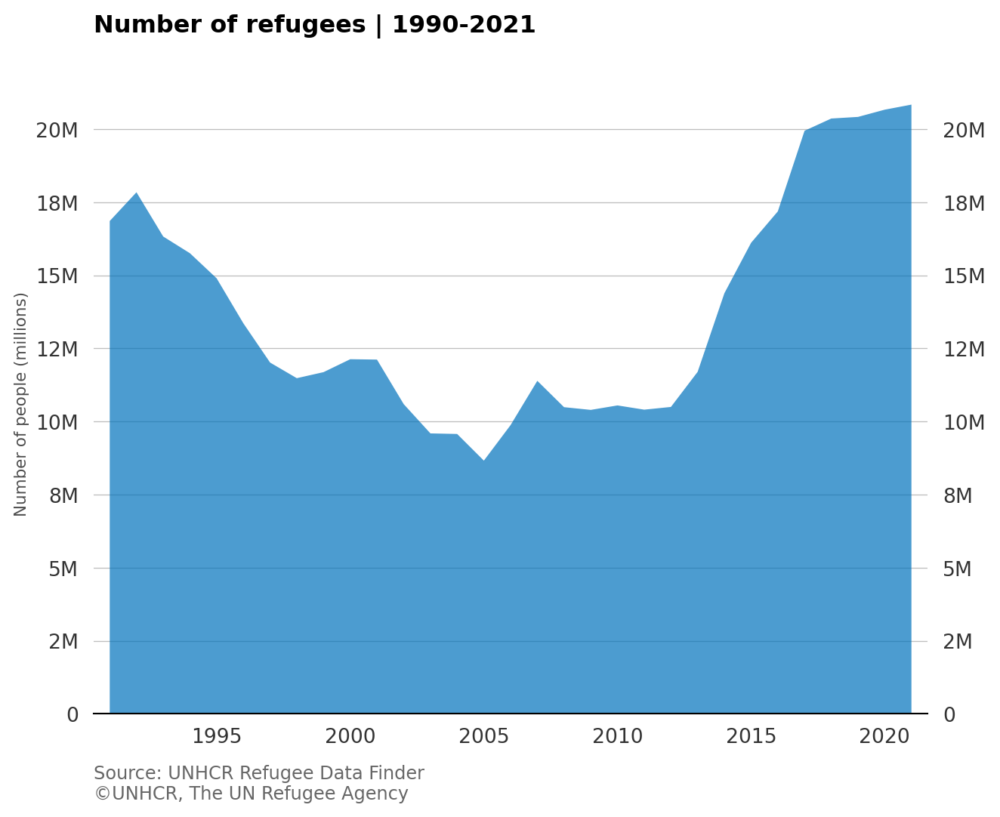
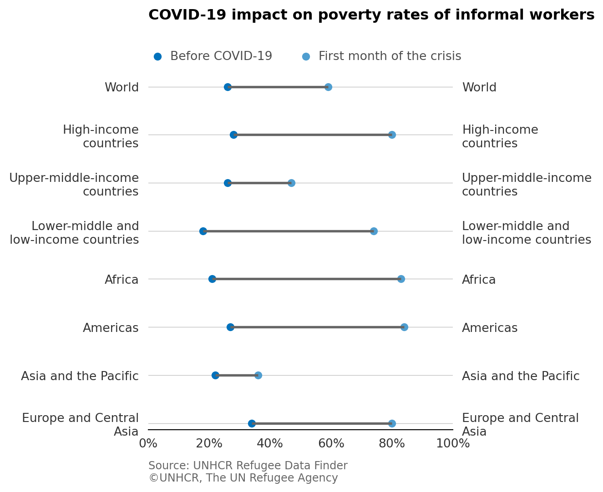
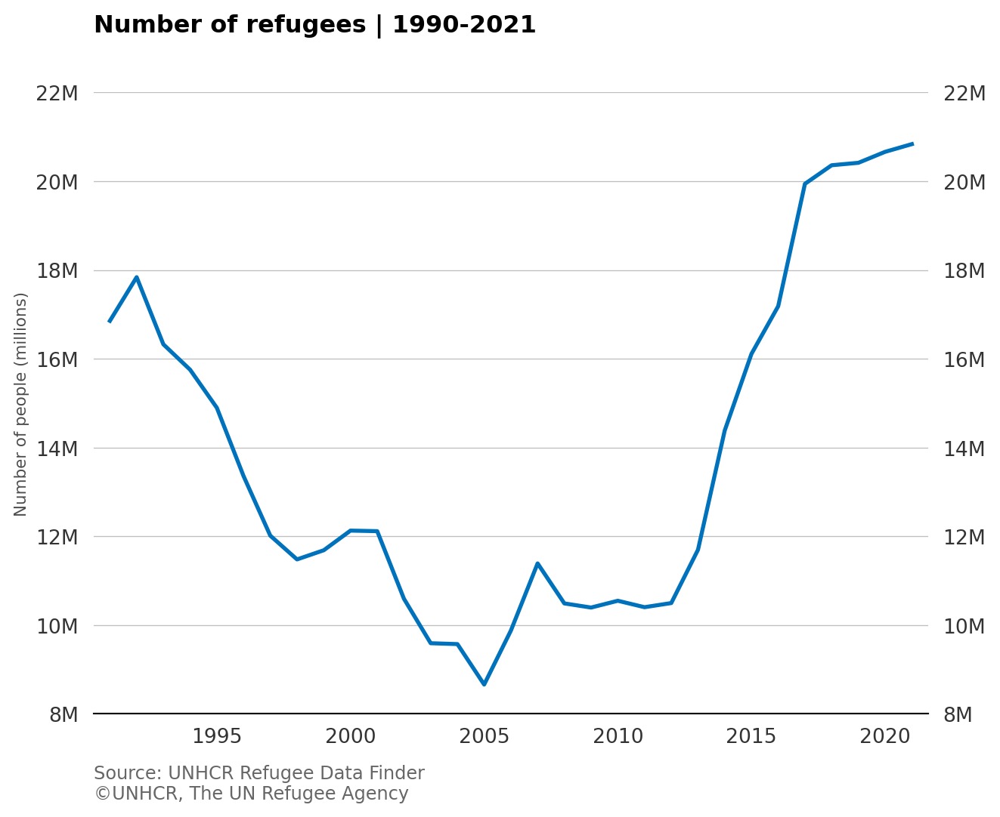
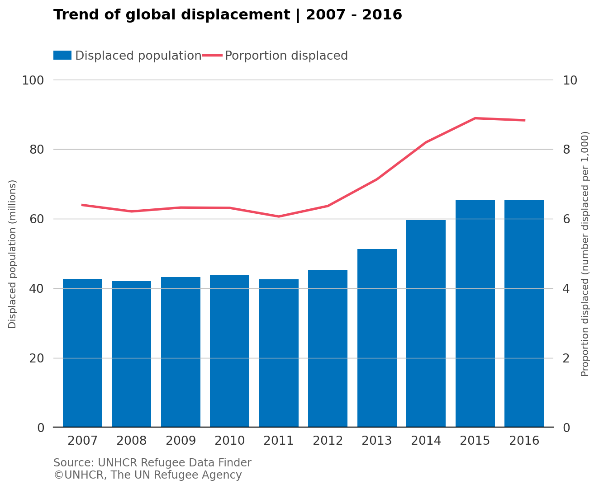

unhcrpyplotstyle Demo
With unhcrpyplotstyle, creating UNHCR-compliant visualizations in Python is straightforward, providing a consistent and branded look for your graphics.
For more information on UNHCR data visualization guidelines, visit the UNHCR Data Visualization Platform.
Styling Demo
The unhcrpyplotstyle package provides Matplotlib styles following the UNHCR Data Visualization Guidelines, ensuring that charts are professional and brand-compliant.
Basic Usage
After installing the package, you can apply the UNHCR style to any Matplotlib chart:
Grid Customization
The UNHCR style allows you to control grid lines. By default, major Y grid lines are visible.

Axis Customization
You can control axis visibility and appearance:

Text Customization
The UNHCR style supports rich text formatting:
Data Labels
You can add data labels to your charts:

Color Palettes
The package includes UNHCR color palettes. Here’s an example using the sequential blue palette:

Void Theme (Minimal)
For pie charts or maps, you can use a minimal theme:

Available Color Palettes
The unhcrpyplotstyle package includes several color palettes:
- Sequential:
sequential_blue,sequential_green,sequential_yellow,sequential_red,sequential_cyan,sequential_purple - Diverging:
diverging_blue_red,diverging_navy_red - Category:
region,poc
Charts type
Area Chart
An area chart, like a line chart, displays the evolution of numeric variables over a continuous period of time. However, in an area chart, the area between the line and x-axis is filled with colour or texture.

Dot plot
A dot plot is a type of graph in which the dots are connected to show changes or differences. It’s an alternative to the grouped bar chart or slope chart.

Line chart
A line chart is a type of chart that displays the evolution of one or several numeric variables over a continuous interval or time period. Typically, the x-axis is used for a timescale or a sequence of intervals, while the y-axis reports values across that progression.

Line column chart
A line column chart is a type of visualization that combines both line and column charts together, using dual axes displayed on the left and right sides of the chart. It allows us to show the relationship of two variables with different magnitudes and scales.

![UNHCR Logo]()